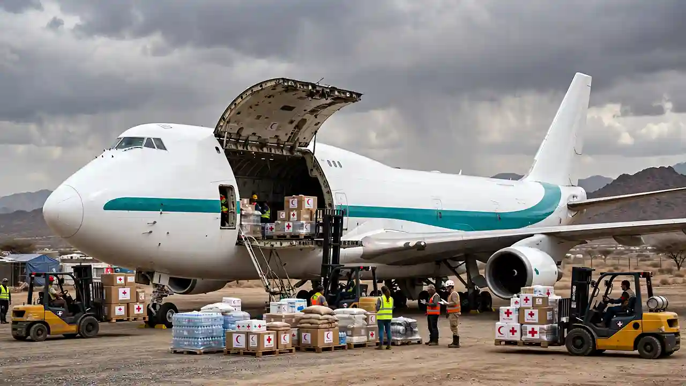

When lives are on the line, logistics cannot fail. Skylinks Asia Aviation provides rapid, reliable air cargo charter for NGOs, relief agencies, and governments delivering life-saving aid to disaster zones and conflict areas across Asia, Middle East & Africa.
By the Skylinks Asia Charter Desk · Reviewed by our Operations Team
Natural disasters, conflicts, and health crises require an immediate and sustained logistical response. We partner with global relief organizations to charter dedicated freighter aircraft capable of landing at remote, damaged, or high-altitude airfields. From emergency medical tents to high-volume water purification systems, we ensure your aid reaches the ground intact and on time.
Humanitarian relief flights typically use one of three aircraft categories: light turboprops for short or unpaved airstrips, narrow-body jets for staging aid workers, and heavy freighters for large-volume or oversized relief cargo. Dedicated charter fills the gap when volume, urgency, or destination fall outside pooled services like UNHAS.
The right aircraft for a relief mission depends on runway conditions at the destination as much as cargo volume.
Cessna 208, Dornier 228, Dash 8
The standard choice for reaching remote or damaged airstrips with light cargo and aid worker transport, and the aircraft type most commonly used across pooled services like UNHAS.
Boeing 737, Airbus A320
Used to move humanitarian personnel and moderate cargo volumes into regional airports, often as the first leg before smaller aircraft take over the final approach to a crisis zone.
747F, IL-76, C-130 Hercules, An-124
Deployed for large-scale or oversized relief cargo: field hospitals, water treatment units, and bulk food aid. The IL-76 and C-130 are specifically valued for short-field and rough-runway performance.
The UN's Humanitarian Air Service (UNHAS), run by the World Food Programme, is the best-known pooled logistics network. It moved over 240,000 passengers and roughly 2,500 metric tons of light cargo to almost 362 destinations on a cost-shared basis in 2025.
Dedicated charter fills the gap — for cargo volumes UNHAS wasn't built to carry, for destinations outside its network, for time-sensitive deployments that can't wait for the next shared flight, or for organizations moving aid independently of the UN system.
Earthquakes, floods, and storms leave communities cut off. We mobilize cargo aircraft within hours to deliver food, water, temporary shelter, and search-and-rescue equipment directly to the affected regions.
Vaccines, blood plasma, and essential medicines require strict temperature control. We source freighters with active cool containers and trained handling staff for WHO and Red Cross medical logistics.
Cold-Chain Pharma DetailsSustained humanitarian missions require reliable supply chains. We arrange scheduled and ad-hoc charter flights for UNHCR and field camps, transporting blankets, high-energy biscuits, and sanitation infrastructure.
For a broader look at how freighter aircraft are categorized and selected more generally, see our full cargo aircraft charter guide to understand the right capacity for your logistics needs.
VIEW CARGO AIRCRAFT CHARTER GUIDEWe understand the unique pressures of humanitarian logistics. Submit your requirements and our rapid-response team will coordinate overflight permits, landing slots, and ground handling to get your aid moving immediately.
Our aid logistics desk handles humanitarian and relief cargo enquiries through our secure contact form. Include origin and destination airfields, aid weight or volume, required date, and any special handling requirements so we can source the right freighter without delay.
Your information is treated as confidential.
UNHAS is a UN-run, cost-shared air service for humanitarian personnel and light cargo, operating in a defined set of countries on a shared schedule. Dedicated charter is used when cargo volume, urgency, or destination fall outside what UNHAS covers, or for organizations operating independently of the UN system.
Light turboprops (Cessna 208, Dornier 228, Dash 8) handle short or unpaved airstrips; narrow-body jets (737, A320) move personnel and moderate cargo into regional airports; heavy freighters (747F, IL-76, C-130 Hercules, An-124) carry large-scale or oversized aid, with the IL-76 and C-130 specifically suited to damaged or rough runways.
For genuine crisis deployment, aircraft can often be mobilized within hours once permits and ground handling are confirmed. Lead time depends heavily on the destination's overflight and landing clearances, particularly in conflict-affected areas.
Yes. Overflight and landing permits, and sometimes war-risk insurance coverage, are typically required for conflict-affected destinations, and clearances can take longer to secure than the flight itself. Coordinating this in advance is one of the most valuable things a charter broker does for an NGO under time pressure.
Yes, with the right aircraft. Short takeoff and landing (STOL) turboprops and rugged heavy-lift types like the IL-76 and C-130 Hercules are specifically chosen for relief missions because they can operate from runways that standard jet freighters cannot.
UN agencies (WFP, UNICEF, UNHCR), international NGOs (ICRC, MSF, CARE International), and government aid agencies (USAID, ECHO) are the most common charterers, alongside religious and community organizations running independent relief efforts.
Pricing still depends on aircraft type, distance, and urgency, but humanitarian missions often involve additional cost factors specific to crisis zones — war-risk insurance, permit expediting, and ground handling at damaged or under-resourced airports — that a standard commercial cargo route wouldn't carry.
Skylinks Asia Aviation is not affiliated with WFP, UNHAS, or any UN agency; the information above on pooled logistics services is provided for general context.